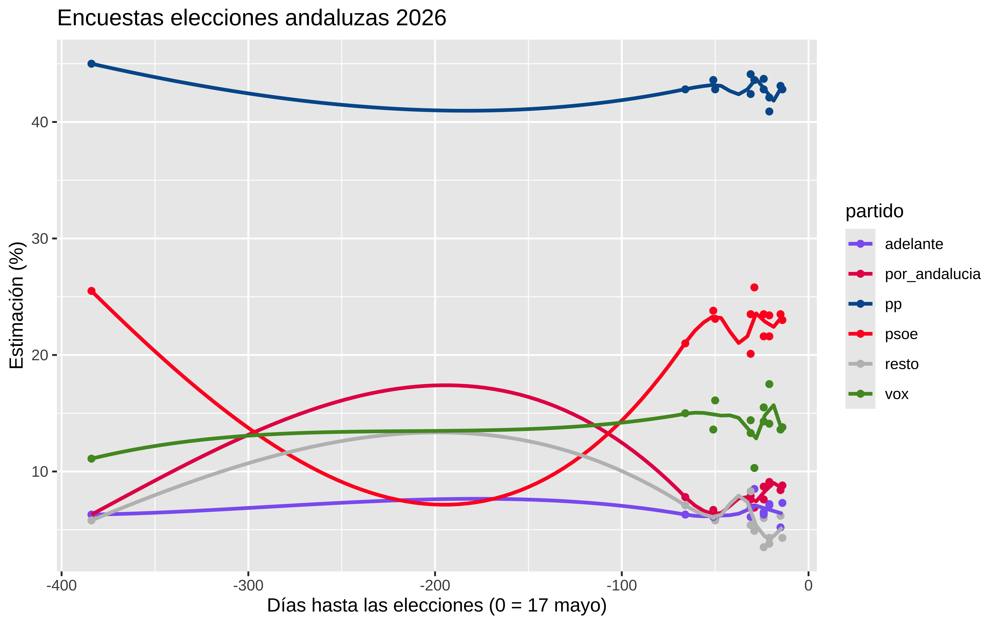
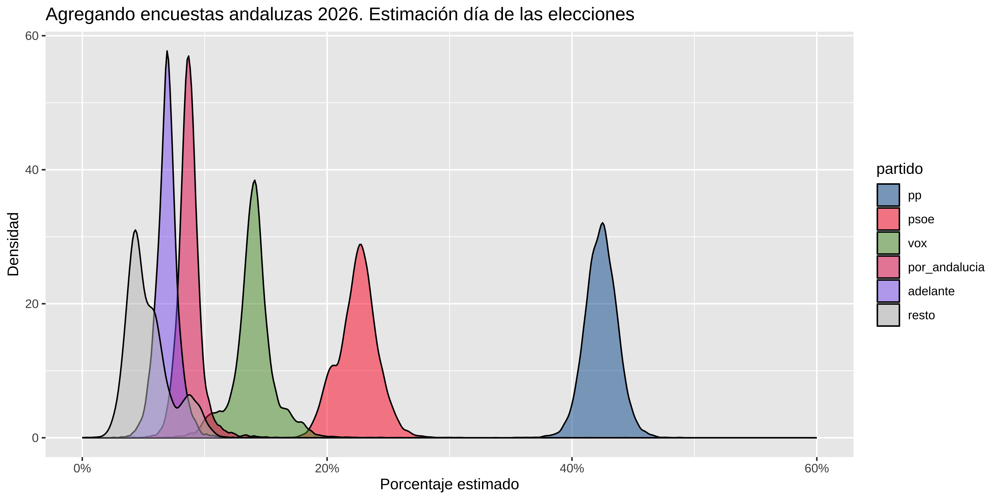

Show the code
library(tidyverse)
library(DT)
df <- read_csv(here::here("2026/05/encuestas_andalucia_2026.csv")) |>
select(empresa, fecha, n, everything())
datatable(df)May 10, 2026
Este post se ha generado solito usando Claude code. Simplemente le dije que mirara como lo hice en las elecciones de 2023 (generales) y 2024(europeas) , que leyera mis posts, y que buscara datos en la web de las encuestas. Me ha creado el csv (que ni he revisado) y que hiciera la estimación siguiendo mi metodología.
El próximo sábado 16 de mayo de 2026 lo revisaré por si hay alguna cagada. O revisadlo vosotros y me decís que está mal.
Tiempo total que me ha llevado hacer el post, menos de 1 hora.
Ya lo hice para las elecciones generales de julio de 2023 y para las europeas de junio de 2024. Toca repetir el ejercicio para las elecciones al Parlamento de Andalucía del 17 de mayo de 2026.
La metodología es la misma: modelo multinomial bayesiano con brms donde cada encuesta aporta un vector de votos estimados, la empresa encuestadora entra como efecto aleatorio y la variable temporal (time, días hasta las elecciones) recoge la tendencia.
Los datos los he sacado de la tabla de encuestas de Wikipedia (en). Solo he incluido encuestas con tamaño muestral publicado. La columna resto es el complemento a 100 de los cinco partidos principales: PP, PSOE-A, Vox, Por Andalucía y Adelante Andalucía.
Esto es solo por diversión. No soy experto en predicción electoral. Para algo serio habría que incluir más encuestas, datos provinciales y traducir los porcentajes a escaños con la ley D’Hondt por circunscripción.
Calculamos time (días hasta las elecciones) y votos (estimación * n / 100) para cada partido.
Pintamos la evolución temporal de la estimación por partido:
colores <- c(
"pp" = "#005999",
"psoe" = "#FF0126",
"vox" = "#51962A",
"por_andalucia" = "#E51C55",
"adelante" = "#8C66F1",
"resto" = "grey"
)
df_long |>
ggplot(aes(x = time, y = estim, color = partido)) +
geom_point() +
scale_color_manual(values = colores) +
geom_smooth(se = FALSE) +
labs(
title = "Encuestas elecciones andaluzas 2026",
x = "Días hasta las elecciones (0 = 17 mayo)",
y = "Estimación (%)"
)
df_wider <- df_long |>
select(-estim) |>
pivot_wider(
id_cols = c(empresa, n, time),
names_from = partido,
values_from = votos
) |>
mutate(
n = pp + psoe + vox + por_andalucia + adelante + resto
)
df_wider$cell_counts <- with(
df_wider,
cbind(pp, psoe, vox, por_andalucia, adelante, resto)
)
datatable(df_wider |> select(empresa, time, n, cell_counts))formula <- brmsformula(
cell_counts | trials(n) ~ time + (time | empresa)
)
(priors <- get_prior(formula, df_wider, family = multinomial()))
#> prior class coef group resp dpar nlpar lb
#> lkj(1) cor
#> lkj(1) cor empresa
#> (flat) b muadelante
#> (flat) b time muadelante
#> student_t(3, 0, 2.5) Intercept muadelante
#> student_t(3, 0, 2.5) sd muadelante 0
#> student_t(3, 0, 2.5) sd empresa muadelante 0
#> student_t(3, 0, 2.5) sd Intercept empresa muadelante 0
#> student_t(3, 0, 2.5) sd time empresa muadelante 0
#> (flat) b muporandalucia
#> (flat) b time muporandalucia
#> student_t(3, 0, 2.5) Intercept muporandalucia
#> student_t(3, 0, 2.5) sd muporandalucia 0
#> student_t(3, 0, 2.5) sd empresa muporandalucia 0
#> student_t(3, 0, 2.5) sd Intercept empresa muporandalucia 0
#> student_t(3, 0, 2.5) sd time empresa muporandalucia 0
#> (flat) b mupsoe
#> (flat) b time mupsoe
#> student_t(3, 0, 2.5) Intercept mupsoe
#> student_t(3, 0, 2.5) sd mupsoe 0
#> student_t(3, 0, 2.5) sd empresa mupsoe 0
#> student_t(3, 0, 2.5) sd Intercept empresa mupsoe 0
#> student_t(3, 0, 2.5) sd time empresa mupsoe 0
#> (flat) b muresto
#> (flat) b time muresto
#> student_t(3, 0, 2.5) Intercept muresto
#> student_t(3, 0, 2.5) sd muresto 0
#> student_t(3, 0, 2.5) sd empresa muresto 0
#> student_t(3, 0, 2.5) sd Intercept empresa muresto 0
#> student_t(3, 0, 2.5) sd time empresa muresto 0
#> (flat) b muvox
#> (flat) b time muvox
#> student_t(3, 0, 2.5) Intercept muvox
#> student_t(3, 0, 2.5) sd muvox 0
#> student_t(3, 0, 2.5) sd empresa muvox 0
#> student_t(3, 0, 2.5) sd Intercept empresa muvox 0
#> student_t(3, 0, 2.5) sd time empresa muvox 0
#> ub tag source
#> default
#> (vectorized)
#> default
#> (vectorized)
#> default
#> default
#> (vectorized)
#> (vectorized)
#> (vectorized)
#> default
#> (vectorized)
#> default
#> default
#> (vectorized)
#> (vectorized)
#> (vectorized)
#> default
#> (vectorized)
#> default
#> default
#> (vectorized)
#> (vectorized)
#> (vectorized)
#> default
#> (vectorized)
#> default
#> default
#> (vectorized)
#> (vectorized)
#> (vectorized)
#> default
#> (vectorized)
#> default
#> default
#> (vectorized)
#> (vectorized)
#> (vectorized)model_andalucia <- brm(
formula,
df_wider,
multinomial(),
prior = priors,
iter = 4000,
warmup = 1000,
cores = 4,
chains = 4,
seed = 47,
file = here::here("2026/05/mod_meta_andalucia"),
backend = "cmdstanr",
control = list(adapt_delta = 0.95),
refresh = 0
)
summary(model_andalucia)
#> Family: multinomial
#> Links: mupsoe = logit; muvox = logit; muporandalucia = logit; muadelante = logit; muresto = logit
#> Formula: cell_counts | trials(n) ~ time + (time | empresa)
#> Data: df_wider (Number of observations: 13)
#> Draws: 4 chains, each with iter = 4000; warmup = 1000; thin = 1;
#> total post-warmup draws = 12000
#>
#> Multilevel Hyperparameters:
#> ~empresa (Number of levels: 8)
#> Estimate Est.Error l-95% CI
#> sd(mupsoe_Intercept) 0.09 0.05 0.01
#> sd(mupsoe_time) 0.00 0.00 0.00
#> sd(muvox_Intercept) 0.15 0.11 0.01
#> sd(muvox_time) 0.01 0.00 0.00
#> sd(muporandalucia_Intercept) 0.10 0.08 0.00
#> sd(muporandalucia_time) 0.00 0.00 0.00
#> sd(muadelante_Intercept) 0.15 0.10 0.01
#> sd(muadelante_time) 0.00 0.00 0.00
#> sd(muresto_Intercept) 0.42 0.18 0.21
#> sd(muresto_time) 0.01 0.01 0.00
#> cor(mupsoe_Intercept,mupsoe_time) 0.15 0.57 -0.93
#> cor(muvox_Intercept,muvox_time) 0.02 0.59 -0.95
#> cor(muporandalucia_Intercept,muporandalucia_time) 0.19 0.58 -0.92
#> cor(muadelante_Intercept,muadelante_time) 0.21 0.58 -0.92
#> cor(muresto_Intercept,muresto_time) 0.53 0.41 -0.52
#> u-95% CI Rhat Bulk_ESS
#> sd(mupsoe_Intercept) 0.20 1.00 5086
#> sd(mupsoe_time) 0.01 1.00 3774
#> sd(muvox_Intercept) 0.42 1.00 2924
#> sd(muvox_time) 0.01 1.00 2003
#> sd(muporandalucia_Intercept) 0.31 1.00 6121
#> sd(muporandalucia_time) 0.01 1.00 2745
#> sd(muadelante_Intercept) 0.40 1.00 4202
#> sd(muadelante_time) 0.01 1.00 3170
#> sd(muresto_Intercept) 0.85 1.00 3520
#> sd(muresto_time) 0.02 1.00 2198
#> cor(mupsoe_Intercept,mupsoe_time) 0.96 1.00 10050
#> cor(muvox_Intercept,muvox_time) 0.96 1.00 5116
#> cor(muporandalucia_Intercept,muporandalucia_time) 0.98 1.00 3221
#> cor(muadelante_Intercept,muadelante_time) 0.98 1.00 7381
#> cor(muresto_Intercept,muresto_time) 0.98 1.00 8481
#> Tail_ESS
#> sd(mupsoe_Intercept) 4290
#> sd(mupsoe_time) 5109
#> sd(muvox_Intercept) 4862
#> sd(muvox_time) 5069
#> sd(muporandalucia_Intercept) 5735
#> sd(muporandalucia_time) 4115
#> sd(muadelante_Intercept) 4156
#> sd(muadelante_time) 4024
#> sd(muresto_Intercept) 3650
#> sd(muresto_time) 1821
#> cor(mupsoe_Intercept,mupsoe_time) 8576
#> cor(muvox_Intercept,muvox_time) 6628
#> cor(muporandalucia_Intercept,muporandalucia_time) 5184
#> cor(muadelante_Intercept,muadelante_time) 7699
#> cor(muresto_Intercept,muresto_time) 4695
#>
#> Regression Coefficients:
#> Estimate Est.Error l-95% CI u-95% CI Rhat Bulk_ESS
#> mupsoe_Intercept -0.64 0.05 -0.73 -0.55 1.00 8429
#> muvox_Intercept -1.11 0.08 -1.29 -0.95 1.00 8445
#> muporandalucia_Intercept -1.58 0.08 -1.73 -1.40 1.00 5262
#> muadelante_Intercept -1.82 0.09 -2.01 -1.66 1.00 7982
#> muresto_Intercept -2.10 0.18 -2.46 -1.71 1.00 4029
#> mupsoe_time -0.00 0.00 -0.00 0.00 1.00 6394
#> muvox_time -0.00 0.00 -0.01 0.00 1.00 5302
#> muporandalucia_time 0.00 0.00 -0.00 0.01 1.00 4175
#> muadelante_time 0.00 0.00 -0.00 0.01 1.00 5209
#> muresto_time 0.00 0.00 -0.01 0.01 1.00 3671
#> Tail_ESS
#> mupsoe_Intercept 6319
#> muvox_Intercept 8238
#> muporandalucia_Intercept 6794
#> muadelante_Intercept 5153
#> muresto_Intercept 2607
#> mupsoe_time 4260
#> muvox_time 5435
#> muporandalucia_time 5120
#> muadelante_time 3187
#> muresto_time 1950
#>
#> Draws were sampled using sample(hmc). For each parameter, Bulk_ESS
#> and Tail_ESS are effective sample size measures, and Rhat is the potential
#> scale reduction factor on split chains (at convergence, Rhat = 1).Tratamos las elecciones como una “nueva encuesta” con time = 0 y empresa desconocida:
Resumen con intervalo de credibilidad al 90%:
estimaciones |>
group_by(partido) |>
summarise(
media = mean(.epred),
mediana = median(.epred),
low = quantile(.epred, 0.05),
high = quantile(.epred, 0.95)
) |>
mutate(across(media:high, \(x) 100 * round(x, 3)))
#> # A tibble: 6 × 5
#> partido media mediana low high
#> <fct> <dbl> <dbl> <dbl> <dbl>
#> 1 pp 42.4 42.4 40.3 44.5
#> 2 psoe 22.5 22.6 19.7 25.1
#> 3 vox 14 14 10.8 16.9
#> 4 por_andalucia 8.8 8.7 7.4 10.3
#> 5 adelante 6.9 6.9 5.5 8.4
#> 6 resto 5.5 5 3.2 9.2estimaciones |>
ggplot(aes(x = .epred, fill = partido)) +
geom_density(alpha = 0.5) +
scale_x_continuous(labels = scales::percent, limits = c(0, 0.6)) +
scale_fill_manual(values = colores) +
labs(
title = "Agregando encuestas andaluzas 2026. Estimación día de las elecciones",
x = "Porcentaje estimado",
y = "Densidad"
)
El Parlamento andaluz tiene 109 escaños; la mayoría absoluta son 55. No traduzco aquí porcentajes a escaños (necesitaría hacerlo provincia a provincia con D’Hondt), pero sí puedo ver la distribución del voto estimado al PP y compararlo con lo que necesitaría grosso modo.
estimaciones |>
filter(partido == "pp") |>
summarise(
prob_pp_sobre_40pct = mean(.epred > 0.40),
prob_pp_sobre_43pct = mean(.epred > 0.43)
)
#> # A tibble: 1 × 7
#> # Groups: empresa, time, n, .row [1]
#> empresa time n .row .category prob_pp_sobre_40pct prob_pp_sobre_43pct
#> <chr> <dbl> <dbl> <int> <fct> <dbl> <dbl>
#> 1 votacione… 0 1 1 pp 0.967 0.309Datos de 13 encuestas (fuente: Wikipedia EN, tabla de sondeos). La metodología es idéntica a los posts anteriores: modelo multinomial bayesiano con efectos aleatorios por empresa y tendencia temporal. Actualización post-electoral pendiente una vez se conozcan los resultados del 17-M.